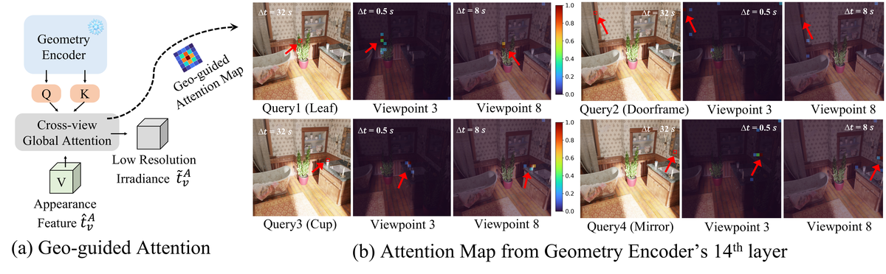
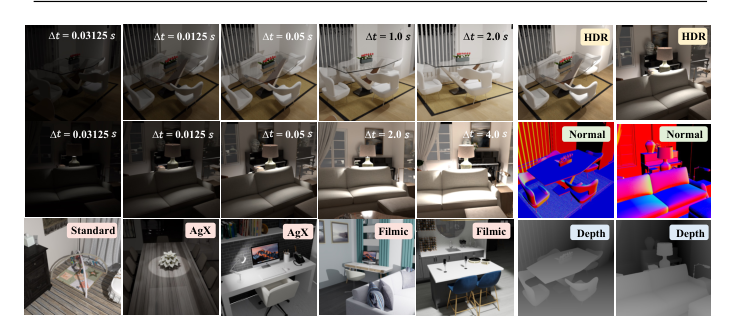
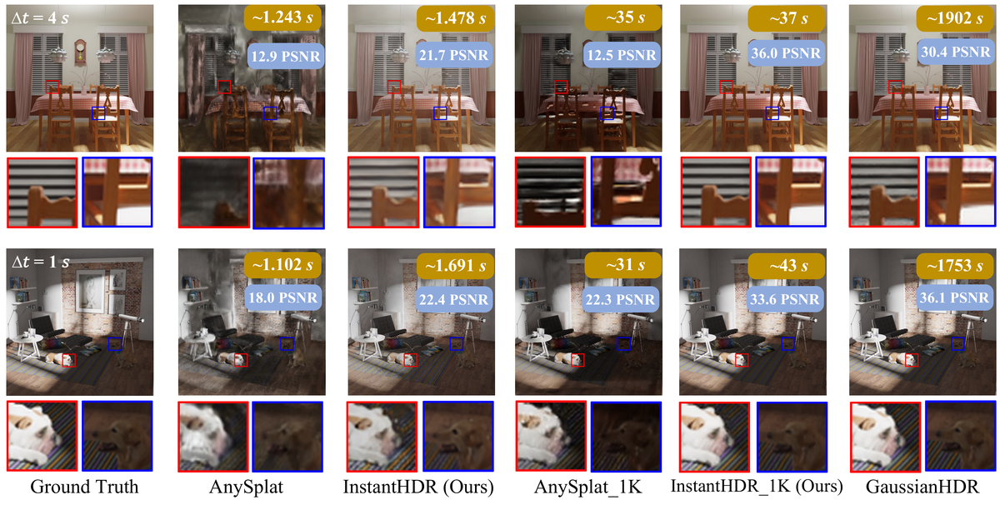

InstantHDR
简单摘要
高动态范围 (HDR) 新视图合成 (NVS) 旨在从多重曝光低动态范围 (LDR) 图像重建 HDR 场景。现有的 HDR 管道严重依赖于已知的相机姿势、初始化良好的密集点云以及耗时的每个场景优化。目前的前馈替代方案通过假设曝光不变的外观而忽略了 HDR 问题。为了弥补这一差距，我们提出了 InstantHDR，这是一种前馈网络，可以在单次前向传递中从未校准的多重曝光 LDR 集合中重建 3D HDR 场景。
具体来说，我们设计了用于多重曝光融合的几何引导外观建模，以及用于通用场景特定色调映射的元网络。由于缺乏 HDR 场景数据，我们为可泛化的前馈 HDR 模型构建了一个名为 HDR-Pretrain 的预训练数据集，具有 168 个 Blender 渲染场景、多种光照类型和多个相机响应函数。综合实验表明，我们的 InstantHDR 提供了与最先进的基于优化的 HDR 方法相当的合成性能，同时通过我们的单前向和后优化设置享受重建速度的提高。
所有代码、模型和数据集将在审核过程后发布。高动态范围 3D 高斯溅射新颖视图合成前馈模型


简而言之，这篇论文关注的核心是：高动态范围 (HDR) 新视图合成 (NVS) 旨在从多重曝光低动态范围 (LDR) 图像重建 HDR 场景。现有的 HDR 管道严重依赖于已知的相机姿势、初始化良好的密集点云以及耗时的每个场景优化。目前的前馈替代方案通过假设曝光不变的外观而忽略了 HDR 问题。为了弥补这一差距，我们提出了 In…
高动态范围 (HDR) 新视图合成 (NVS) 旨在从以不同曝光捕获的多视图低动态范围 (LDR) 图像重建 HDR 场景。与典型的低动态范围（从 0 到 255）成像不同，HDR 可以捕获更广泛的亮度范围（从 0 到 +），而典型的低动态范围（从 0 到 255）成像通常会因传感器的限制而在极端光照下出现细节损失和颜色失真。通过将 NeRF 或 3D Gaussian Splatting 等先进框架与色调映射器集成来对相机响应函数 (CRF) 进行建模，HDR 任务可以通过可控曝光重新渲染照片般逼真的新颖视图。
其忠实再现现实世界光影的能力使其成为自动驾驶、数字人类、沉浸式图像编辑等多种应用不可或缺的一部分。现有的 HDR NVS 方法主要基于优化。然而，这种范例本质上成本高昂并且无法推广，因为它需要耗时的每个场景优化、精确校准的相机姿势以及用于点云初始化的密集多视图输入。例如，如图所示，GaussianHDR 很难仅从四个 LDR 视图重建场景，因为曝光引起的外观不一致会降低稀疏视图设置中基于 SfM 的点云初始化的可靠性。
此外，它们繁重的计算开销和强烈的数据依赖性限制了实时场景中的实际部署。最近，3D 前馈模型通过在几秒钟内推断几何形状，彻底改变了场景重建，与基于优化的方法相比，实现了令人印象深刻的速度和泛化性。将此范式集成到 HDR NVS 任务中可以提高模型的通用性和推理速度。然而，直接将原始前馈模型应用于HDR重建可能会遇到以下问题。 (a) 曝光引起的外观不一致：朴素融合导致严重的重影——如图所示。同样的白墙在 处显得明亮，但在 处显得接近黑色，从而在 AnySplat 中造成可见的伪影。
(b) 像素级几何对齐：在大亮度变化下，建立精确的像素级几何对应关系仍然是一项艰巨的任务。 (c) 相机响应函数不一致：在现实世界中，不同的相机和软件应用不同的颜色变换（例如，AgX、Filmic），使得学习统一的色调映射算子变得困难。 (d) HDR 数据稀缺：当前公开可用的 HDR 数据集不足以支持所需的鲁棒大规模预训练……
核心创新
综合引言与方法部分，这篇论文的核心创新可以概括为以下几方面：
1）问题定义与研究动机
高动态范围 (HDR) 新视图合成 (NVS) 旨在从以不同曝光捕获的多视图低动态范围 (LDR) 图像重建 HDR 场景。与典型的低动态范围（从 0 到 255）成像不同，HDR 可以捕获更广泛的亮度范围（从 0 到 +），而典型的低动态范围（从 0 到 255）成像通常会因传感器的限制而在极端光照下出现细节损失和颜色失真。通过将 NeRF 或 3D Gaussian Splatting 等先进框架与色调映射器集成来对相机响应函数 (CRF) 进行建模，HDR 任务可以通过可控曝光重新渲染照片般逼真的新颖视图。其忠实再现现实世界光影的能力使其成为自动驾驶、数字人类、沉浸式图像编辑等多种应用不可或缺的一部分。现有的 HDR NVS 方法主要基于优化。然而，这种范例本质上成本高昂并且无法推广，因为它需要耗时的每个场景优化、精确校准的相机姿势以及用于点云初始化的密集多视图输入。例如，如图所示，GaussianHDR 很难仅从四个 LDR 视图重建场景，因为曝光引起的外观不一致会降低稀疏视图设置中基于 SfM 的点云初始化的可靠性。此外，它们繁重的计算开销和强烈的数据依赖性限制了实时场景中…
2）方法框架与核心模块
给定在不同曝光下捕获的未校准多视图 LDR 图像，InstantHDR 会重建 HDR 3D 高斯分布，并在任何目标曝光下渲染新颖的视图（图 1）。我们首先在第 2 节中将问题形式化。 ，然后在第 2 节中详细介绍管道设计。 ，包括地理引导外观建模模块（第 2 节）和 3D HDR 到 2D LDR 映射模块（第 2 节），最后在第 2 节中介绍我们的训练策略。 。问题设置输入。考虑单个 3D 场景的未校准视图，以上下文图像 的形式给出，每个图像都是在已知的曝光时间捕获的。为了方便起见，我们在对数曝光空间中工作并定义 。输出。 InstantHDR 通过预测以下内容来联合重建场景几何形状和 HDR 外观：(a) HDR 3D 高斯。各向异性 3D 高斯函数的集合，其中每个高斯函数由中心位置 、不透明度 、方向四元数 、各向异性比例 和 HDR 颜色嵌入参数化，参数化为编码对数辐射度的球谐 (SH) 系数，如下。 (b) 相机参数。每个视图参数 ，其中包括焦距、3-DoF 旋转（轴角）、3-DoF 平移和 2-DoF 主点偏移。 (c) 场景级属性。中间曝光锚点，用作参考曝光级别，以及…
3）实验设计与工程价值
预训练数据集。具有多视图 LDR 图像的 HDR 数据集仍然极其稀缺。如表所示。 ，现有的基准仅包含少数场景，远远不足以进行大规模预训练。为了弥补这一差距，我们构建了 HDR-Pretrain，如图 1 所示，这是一个在 Blender 中渲染的 168 个真实感室内场景的大型合成数据集。 3D 资产源自 HSSD，这是一个最初为具体人工智能研究而构建的现实内饰的开源集合。遵循 HDR-NeRF，我们在网格上对每个场景的视点进行采样，并通过 Cycles 路径跟踪以分辨率渲染 32 位 HDR 图像。每个视图都与随机选择的色调映射算子下的 5 个曝光包围的 LDR 图像以及深度和法线贴图配对。我们在每个场景中随机应用三个色调映射运算符（AgX、Filmic、Standard）之一来增加数据多样性。评估数据集。我们主要在 HDR-NeRF 基准上进行评估，其中包含 8 个合成场景和 4 个…
技术细节
下面按照论文的方法章节结构展开，重点说明模型的关键模块、公式设计和训练策略。
给定在不同曝光下捕获的未校准多视图 LDR 图像，InstantHDR 会重建 HDR 3D 高斯分布，并在任何目标曝光下渲染新颖的视图（图 1）。我们首先在第 2 节中将问题形式化。 ，然后在第 2 节中详细介绍管道设计。 ，包括地理引导外观建模模块（第 2 节）和 3D HDR 到 2D LDR 映射模块（第 2 节），最后在第 2 节中介绍我们的训练策略。 。问题设置输入。考虑单个 3D 场景的未校准视图，以上下文图像 的形式给出，每个图像都是在已知的曝光时间捕获的。为了方便起见，我们在对数曝光空间中工作并定义 。输出。 InstantHDR 通过预测以下内容来联合重建场景几何形状和 HDR 外观：(a) HDR 3D 高斯。各向异性 3D 高斯函数的集合，其中每个高斯函数由中心位置 、不透明度 、方向四元数 、各向异性比例 和 HDR 颜色嵌入参数化，参数化为编码对数辐射度的球谐 (SH) 系数，如下。 (b) 相机参数。每个视图参数 ，其中包括焦距、3-DoF 旋转（轴角）、3-DoF 平移和 2-DoF 主点偏移。 (c) 场景级属性。中间曝光锚点，用作参考曝光级别，以及近似场景特定相机响应函数（CRF）的轻量级色调映射器的参数。整体测绘。形式上，我们的模型实现了： 管道概述 如图 1 所示，我们的管道由两个分支组成：一个几何分支，用于根据多视图图像估计场景结构；以及一个外观分支，用于根据曝光不一致的输入重建 HDR 辐照度。给定未校准的多重曝光 LDR 图像，几何分支通过预训练的转换器将其编码为高维特征，并解码深度图和相机姿势。外观分支（我们的核心贡献）使用地理引导外观建模模块，该模块利用几何分支的几何对应关系将多重曝光信息融合到连贯的 HDR 表示中。两个分支的输出由高斯头组合以产生 HDR 3D 高斯，然后通过学习的色调映射器将其转换为 LDR（第 1 节）。几何分支。几何分支为我们的管道提供了结构基础。继 VGGT 和 AnySplat 之后，我们采用预训练的交替注意力变压器作为几何骨干。每个图像都使用 DINOv2 修补为维度标记，其中 和 。
对于每个标记序列，我们在前面添加一个可学习的相机标记和四个寄存器标记。来自所有视图的组合令牌由 层交替注意力变换器处理，其中每一层应用逐帧自注意力，然后应用全局跨视图注意力。在整个训练过程中，用于相机姿势和深度图的专用解码器头与几何编码器一起冻结。高斯头。高斯头结合来自两个分支的信息来预测 HDR 感知的高斯属性。它采用地理引导外观建模模块（第 2 节）生成的几何标记和高分辨率辐照度特征作为输入。这…
$$ \bigl\{(\boldsymbol{\mu}_g,\, \sigma_g,\, \boldsymbol{r}_g,\, \boldsymbol{s}_g,\, \boldsymbol{c}_g^{h})\bigr\}_{g=1}^{G}, $$
ntext 图像，每张图像均在已知曝光时间捕获。为了方便起见，我们在对数曝光空间中工作并定义 。输出。 InstantHDR 通过预测以下内容来联合重建场景几何形状和 HDR 外观：(a) HDR 3D 高斯。各向异性 3D 高斯函数的集合，其中每个高斯函数都由 ce 参数化……
$$ f_{\boldsymbol{\Theta}}\!:\; \{I_v,\, \ell_v\}_{v=1}^{V} \;\longmapsto\; \Bigl\{(\boldsymbol{\mu}_g,\, \sigma_g,\, \boldsymbol{r}_g,\, \boldsymbol{s}_g,\, \boldsymbol{c}_g^{h})\Bigr\}_{g=1}^{G} \;\cup\; \{p_v\}_{v=1}^{V} \;\cup\; \{\bar{\ell},\, \boldsymbol{\theta}\}. \label{eq:mapping} $$
化，以及2-DoF主点偏移。 (c) 场景级属性。中间曝光锚点，用作参考曝光级别，以及近似场景特定相机响应函数（CRF）的轻量级色调映射器的参数。整体测绘。正式地，我们的模型实现了：管道概述 A…
$$ (\gamma_v,\, \beta_v) = \mathrm{FiLM}\!\bigl(\mathbf{e}_v,\; \bar{\mathbf{a}}_v,\; \bar{\mathbf{a}}\bigr), $$
_v d e_v t_v^A R^N d p d 作为几何骨干。然后 FiLM 层预测每个视图的仿射参数：其中 是每个视图的特征平均值， 是全局场景摘要。然后将外观标记调制为：将所有视图对齐到共享辐照度
$$ \hat{\boldsymbol{t}}_v^{A} = \boldsymbol{t}_v^{A} \odot (1 + \gamma_v) + \beta_v, $$
参数：其中 是每个视图的特征平均值， 是全局场景摘要。然后将外观标记调制为：在跨视图融合之前将所有视图对齐到共享的辐照度水平。请注意，与首先通过逆伽玛校正对输入进行线性化的方法不同，我们的模型直接在相机上运行......
$$ \tilde{\boldsymbol{t}}_v^{A} = \mathrm{softmax}\!\left(\frac{Q K^{\!\top}}{\sqrt{d}}\right) \hat{\boldsymbol{t}}_v^{A}. $$
xtit 冻结几何编码器中的全局注意力图已经编码了可靠的跨视图几何对应关系，这极大地有利于我们的外观建模。因此，我们重用这些注意力图来指导外观融合。如图（b）所示，树叶、杯子、门框、镜子等多种元素……
$$ \boldsymbol{f}_v^{\text{hr}} = \mathrm{Conv}\!\bigl( \mathrm{Up}(\tilde{\boldsymbol{t}}_v^{A}) + \mathrm{Conv}(\mathbf{g}_v - \mathbf{g}_v^{\downarrow\uparrow}) \bigr) \;\in\; \mathbb{R}^{d \times H \times W}, \label{eq:upsample} $$
通过浅层 CNN 的特征图。通过下采样和双线性上采样获得低通版本，产生高频残差。然后将该残差添加到双线性上采样的辐照度特征中，以产生像素级辐照度特征：将多视图辐照度一致性与每i相结合......



把全文方法串起来看，这篇论文的逻辑基本都遵循同一条主线：先把输入组织成更容易处理的表示，再通过模型结构和损失函数把这个表示推向目标输出，最后用可视化与数值实验共同证明该设计有效。
实验结论
实验部分主要回答两个问题：第一，方法是否真的优于已有基线；第二，这种优势来自哪一个设计决策。
预训练数据集。具有多视图 LDR 图像的 HDR 数据集仍然极其稀缺。如表所示。 ，现有的基准仅包含少数场景，远远不足以进行大规模预训练。为了弥补这一差距，我们构建了 HDR-Pretrain，如图 1 所示，这是一个在 Blender 中渲染的 168 个真实感室内场景的大型合成数据集。 3D 资产源自 HSSD，这是一个最初为具体人工智能研究而构建的现实内饰的开源集合。遵循 HDR-NeRF，我们在网格上对每个场景的视点进行采样，并通过 Cycles 路径跟踪以分辨率渲染 32 位 HDR 图像。每个视图都与随机选择的色调映射算子下的 5 个曝光包围的 LDR 图像以及深度和法线贴图配对。我们在每个场景中随机应用三个色调映射运算符（AgX、Filmic、Standard）之一来增加数据多样性。评估数据集。我们主要在 HDR-NeRF 基准上进行评估，其中包含 8 个合成场景和 4 个真实室内场景，每个场景都是从 35 个视点、5 个曝光级别捕获的。遵循标准协议，使用 18 个视图（其中一次曝光）作为输入，而其余视图则用于评估。为了清楚起见，我们报告了所有 5 种暴露的平均 LDR 指标，而不是区分观察到的 (LDR-OE) 和新颖的 (LDR-NE) 暴露。我们在稀疏视图设置下进一步测试，仅使用 4 或 8 个输入视图。实施细节。我们以 AnySplat 为基础，其骨干被冻结，使用的体素大小为 .训练使用 AdamW 进行余弦调度、峰值学习率、1K 预热，并在 8 个 NVIDIA A6000 GPU 上以 bf16 精度运行 30K 迭代，持续 2 天。输入分辨率是随机裁剪和翻转增强的。我们设置 和 ，在每次迭代中采样上下文视图。由于真实场景和合成 HDR-Pretrain 场景之间存在域差距，我们在评估 HDR-NeRF 真实场景之前对 HDR-Plenoxels 4 真实场景进行微调，以确保测试场景始终是看不见的。按照无姿态方法，我们执行测试时姿态对齐以进行评估和后期优化。评估指标。所有图像均已调整大小以进行公平比较。我们报告 PSNR、SSIM、LPIPS 和重建时间，以进行定量和效率比较。遵循 HDR-NeRF ，使用 -law 在色调映射域中评估 HDR 结果，并使用 99% 归一化来抑制极端 HDR 值。零样本推理的定量结果 LDR 比较。我们首先评估 HDR-NeRF 场景的零样本结果。
AnySplat 忽略曝光不一致，导致结果严重下降。如表所示。 ，InstantHDR 始终大幅优于 AnySplat（例如，真实场景上 +5.65 dB，8 个视图的合成场景上 +8.07 dB），而 i…


- 方法在核心指标上的优势与结构设计和训练目标直接相关；
- 消融实验表明，拿掉关键模块后性能与结果质量都有明显回落；
- 论文不仅比较数值，也关注可视化质量、稳定性和泛化能力等更贴近真实使用的信号。
理解评价
我们推出了 InstantHDR，这是第一个用于从未校准的多重曝光 LDR 图像合成 HDR 新视图的前馈框架。通过利用几何引导的跨视图注意力来进行曝光稳健的外观融合，并利用元网络进行场景自适应色调映射，InstantHDR 可在几秒钟内重建 HDR 场景。我们还引入了 HDR-Pretrain，这是一个 168 场景的合成数据集，用于解决前馈 HDR 预训练的数据稀缺问题。实验表明，InstantHDR 的质量比基于优化的方法具有竞争力，同时速度快了几个数量级。我们希望这个 InstantHDR 能够激发更多关于实时 3D HDR 重建的想法。
如果把它当成研究参考，建议重点关注三件事：第一，这套方法真正依赖的归纳偏置是什么；第二，实验中真正拉开差距的模块是哪一个；第三，它的局限究竟来自数据、算力还是监督信号本身。
以下相关论文可以作为进一步追踪的入口：